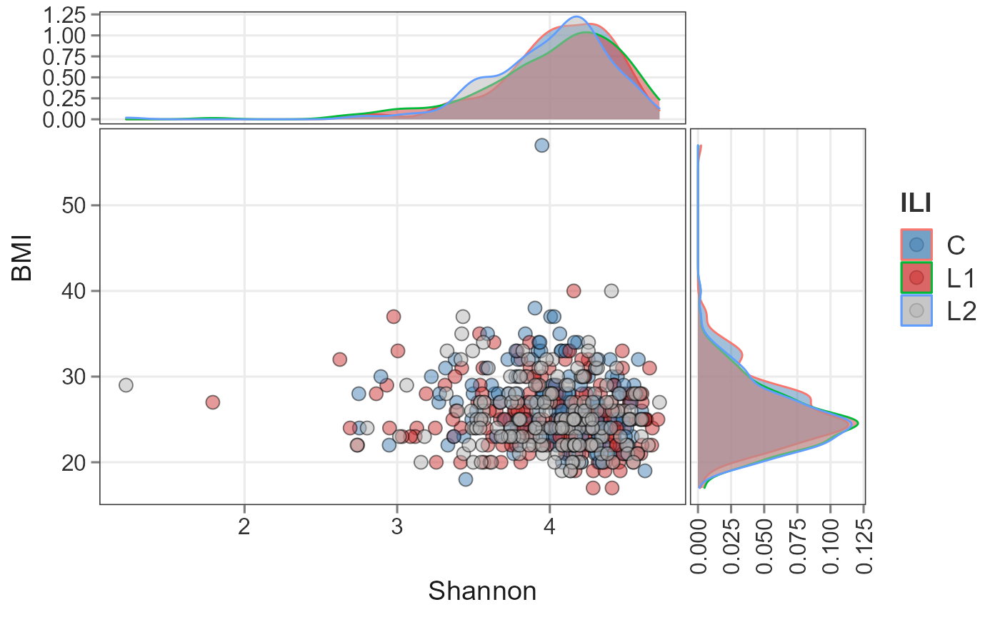
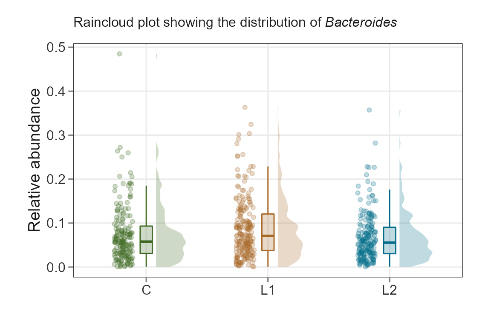
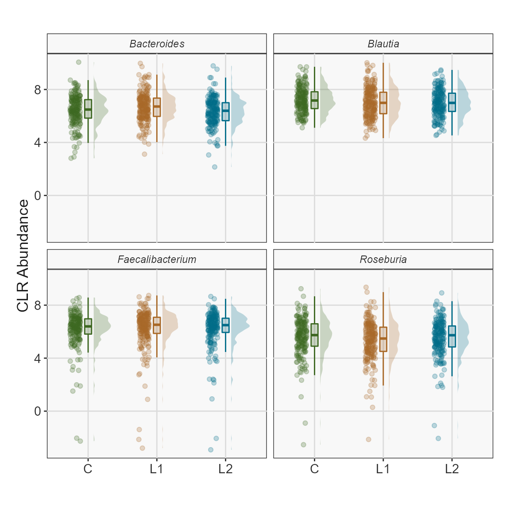

Introduction
Introduction.RmdbiomeViz
biomeViz is part of the RIVM-ToolBox project aimed at
providing standard set of tools that interact with open tools for a wide
array of data analytics, including microbiomics. The RIVM-ToolBox is a
set of individual R tools focused towards different
goals/functionalities.
biomeUtils: Data handling
Outputs for standard data generating pipelines/workflows.biomeStats: Data analytics
Common data analytics including basic statistics.biomeViz: Data visualization
Data visualization of different data types.
library(biomeViz)
#> Loading required package: phyloseq
#> Loading required package: biomeUtils
#> Loading required package: microbiome
#> Loading required package: ggplot2
#>
#> microbiome R package (microbiome.github.com)
#>
#>
#>
#> Copyright (C) 2011-2022 Leo Lahti,
#> Sudarshan Shetty et al. <microbiome.github.io>
#>
#> Attaching package: 'microbiome'
#> The following object is masked from 'package:ggplot2':
#>
#> alpha
#> The following object is masked from 'package:base':
#>
#> transformCategorical and numeric plot
Visualize one categorical column and one numeric column in
sample_data.
library(biomeUtils)
library(biomeViz)
library(dplyr)
library(microbiome)
library(ggplot2)
library(gghalves)
library(patchwork)
ps <- FuentesIliGutData
# calculate Shannon diversity using microbiome::diversity and add it to
# the sample_data in phyloseq using biomeUtils::mutateSampleData()
ps <- mutateSampleData(ps,
Shannon = microbiome::diversity(ps, "shannon")[,1])
plotByGroup(ps,
x.factor="ILI",
y.numeric = "Shannon") +
gghalves::geom_half_point(
ggplot2::aes_string(fill="ILI"),
side = "l",
range_scale = .4,
alpha = 0.25,
shape = 21) +
scale_fill_manual(values = c("#3d6721", "#a86826", "#006c89"), guide = "none")
Scatter plot
library(biomeUtils)
library(biomeViz)
library(dplyr)
library(microbiome)
library(ggplot2)
plotScatterViz(ps, x_numeric = "Shannon", y_numeric = "BMI",
color_var = "ILI") +
scale_fill_manual(values=c("steelblue", "brown3", "grey70"))+
scale_fill_manual(values=c("steelblue", "brown3", "grey70"))
#> Registered S3 method overwritten by 'ggside':
#> method from
#> +.gg ggplot2
#> Scale for 'fill' is already present. Adding another scale for 'fill', which
#> will replace the existing scale.
#> Warning: Removed 1 rows containing non-finite values (stat_density).
#> Warning: Removed 1 rows containing missing values (geom_point).
Theme showcase
p.base <- plotByGroup(ps,
x.factor="ILI",
y.numeric = "Shannon") +
gghalves::geom_half_point(
ggplot2::aes_string(fill="ILI"),
side = "l",
range_scale = .4,
alpha = 0.25,
shape = 21) +
labs(subtitle = "base plot") +
theme_bw() +
scale_fill_biomeViz(palette = "viz3")
p.bw <- plotByGroup(ps,
x.factor="ILI",
y.numeric = "Shannon") +
gghalves::geom_half_point(
ggplot2::aes_string(fill="ILI"),
side = "l",
range_scale = .4,
alpha = 0.25,
shape = 21) +
scale_fill_biomeViz(palette = "viz3") +
labs(subtitle = "biomeViz bw") +
theme_biomViz_bw()
p.min <- plotByGroup(ps,
x.factor="ILI",
y.numeric = "Shannon") +
gghalves::geom_half_point(
ggplot2::aes_string(fill="ILI"),
side = "l",
range_scale = .4,
alpha = 0.25,
shape = 21) +
scale_fill_biomeViz(palette = "viz3") +
labs(subtitle = "biomeViz minimal") +
theme_biomViz_minimal()
p.gen <- plotByGroup(ps,
x.factor="ILI",
y.numeric = "Shannon") +
gghalves::geom_half_point(
ggplot2::aes_string(fill="ILI"),
side = "l",
range_scale = .4,
alpha = 0.25,
shape = 21) +
scale_fill_biomeViz(palette = "viz3") +
labs(subtitle = "biomeViz general") +
theme_biomViz()
((p.base | p.bw ) / ( p.min | p.gen ) ) + plot_layout(guides = "collect")
Top features
Plot the features with the highest abundance in all samples.
library(biomeUtils)
library(biomeViz)
plotTopAbundant(SprockettTHData,
taxa_level = "Family",
top=10L,
aes(color=Phylum)) +
theme_biomViz_minimal() +
scale_colour_biomeViz_summer()
Heatmap
library(biomeUtils)
library(biomeViz)
library(microbiome)
library(dplyr)
library(tidyHeatmap)
# Transform to relative abundance
ps <- FuentesIliGutData %>%
microbiome::transform("compositional")
# Select taxa to plot. This avoid overcrowding
select_taxa <- findTopTaxa(ps, top= 10, method="mean")
p <- plotTidyHeatmap(ps, select_taxa = select_taxa,
group_samples_by = "ILI",
add_taxa_label = FALSE,
cluster_rows = FALSE,
.scale = "none", # no scaling only relative abundance
transform = NULL,
palette_grouping = list(biomeViz_palettes$viz3)) %>%
add_line(age)
p
Raincloud
Rain clouds are effective to visualize data. Read more about their utility here Allen M, Poggiali D, Whitaker K et al. Raincloud plots: a multi-platform tool for robust data visualization [version 2; peer review: 2 approved]. Wellcome Open Res 2021, 4:63 link
library(biomeUtils)
library(biomeViz)
library(microbiome)
library(ggplot2)
library(dplyr)
ps <- FuentesIliGutData %>%
microbiome::aggregate_taxa("Genus") %>%
microbiome::transform("compositional")
plotTaxaRaincloud(ps,
taxa ="Bacteroides",
group_samples_by = "ILI",
opacity = 0.25,
shape_point = 21) + # combine with ggplot2 for improvements
labs(y = "Relative abundance",
x = "",
subtitle = expression(paste("Raincloud plot showing the distribution of ",italic("Bacteroides")))) +
theme_biomViz()+
scale_fill_manual(values = c("#3d6721", "#a86826", "#006c89"), guide = "none") +
scale_color_manual(values = c("#3d6721", "#a86826", "#006c89"), guide = "none") +
theme(plot.subtitle = element_text(margin = margin(t = 5, b = 10)),
plot.margin = margin(10, 25, 10, 25)) 
Plot CLR abundance of multiple taxa.
ps <- FuentesIliGutData %>%
microbiome::aggregate_taxa("Genus") %>%
microbiome::transform("clr")
taxa.to.plot <- c("Bacteroides","Blautia","Roseburia","Faecalibacterium")
plotTaxaRaincloud(ps,
taxa = taxa.to.plot,
group_samples_by = "ILI",
opacity = 0.25,
shape_point = 21) + # combine with ggplot2 for improvements
labs(y = "CLR Abundance",
x = "") +
theme_biomViz_bw() +
theme(strip.text.x = element_text(face = "italic")) +
scale_fill_manual(values = c("#3d6721", "#a86826", "#006c89"), guide = "none") +
scale_color_manual(values = c("#3d6721", "#a86826", "#006c89"), guide = "none") 
PCoA plot
A Principal Coordinates Analysis for phyloseq object. To
visualize similarities/dissimilarities between samples in 2D ordination.
This function extends the phyloseq ordination plots to
include taxa that correlate with chosen axis and plots them along with a
side boxplot for comparing inter-sample variation within groups.
library(biomeUtils)
library(dplyr)
library(ggside)
ps <- FuentesIliGutData %>%
microbiome::transform("compositional") %>%
mutateTaxaTable(FeatureID = taxa_names(FuentesIliGutData))
plotPCoA(x =ps,
group_var = "ILI",
ord_method = "PCoA",
dist_method = "bray",
seed = 1253,
cor_method = "spearman",
verbose = TRUE,
padj_cutoff = 0.05,
padj_method = "fdr",
arrows = TRUE,
label_col = "grey30",
plot_centroids = TRUE,
add_side_box = TRUE,
axis_plot = c(1:2),
point_shape = 21, # point_shape
point_alpha = 0.5) +
theme_biomViz_minimal() +
scale_color_manual(values = c("#3d6721", "#a86826", "#006c89")) +
scale_fill_manual(values = c("#3d6721", "#a86826", "#006c89"))
#> Random number for permutation analysis ...
#> 1253
#> 'adonis' will be deprecated: use 'adonis2' instead
#> Warning in .check_taxa_axis(axis.a.tax, axis.b.tax): Second of the choosen axis
#> in `axis_plot` has no taxa satisfying criteria to plot
sessionInfo()
#> R version 4.2.1 (2022-06-23 ucrt)
#> Platform: x86_64-w64-mingw32/x64 (64-bit)
#> Running under: Windows 10 x64 (build 19044)
#>
#> Matrix products: default
#>
#> locale:
#> [1] LC_COLLATE=English_United States.utf8
#> [2] LC_CTYPE=English_United States.utf8
#> [3] LC_MONETARY=English_United States.utf8
#> [4] LC_NUMERIC=C
#> [5] LC_TIME=English_United States.utf8
#>
#> attached base packages:
#> [1] stats graphics grDevices utils datasets methods base
#>
#> other attached packages:
#> [1] ggside_0.2.0 tidyHeatmap_1.8.1 patchwork_1.1.1 gghalves_0.1.3
#> [5] dplyr_1.0.9 biomeViz_0.0.06 biomeUtils_0.018 microbiome_1.18.0
#> [9] ggplot2_3.3.6 phyloseq_1.40.0
#>
#> loaded via a namespace (and not attached):
#> [1] Rtsne_0.16 colorspace_2.0-3 rjson_0.2.21
#> [4] ellipsis_0.3.2 rprojroot_2.0.3 circlize_0.4.15
#> [7] XVector_0.36.0 GlobalOptions_0.1.2 fs_1.5.2
#> [10] clue_0.3-61 rstudioapi_0.13 farver_2.1.0
#> [13] ggrepel_0.9.1 bit64_4.0.5 fansi_1.0.3
#> [16] codetools_0.2-18 splines_4.2.1 doParallel_1.0.17
#> [19] cachem_1.0.6 knitr_1.39 ade4_1.7-19
#> [22] jsonlite_1.8.0 cluster_2.1.3 png_0.1-7
#> [25] ggdist_3.1.1 compiler_4.2.1 assertthat_0.2.1
#> [28] Matrix_1.4-1 fastmap_1.1.0 cli_3.3.0
#> [31] htmltools_0.5.2 tools_4.2.1 igraph_1.3.1
#> [34] gtable_0.3.0 glue_1.6.2 GenomeInfoDbData_1.2.8
#> [37] reshape2_1.4.4 fastmatch_1.1-3 Rcpp_1.0.8.3
#> [40] Biobase_2.56.0 jquerylib_0.1.4 pkgdown_2.0.5
#> [43] vctrs_0.4.1 Biostrings_2.64.0 rhdf5filters_1.8.0
#> [46] multtest_2.52.0 ape_5.6-2 nlme_3.1-157
#> [49] DECIPHER_2.24.0 iterators_1.0.14 xfun_0.31
#> [52] stringr_1.4.0 lifecycle_1.0.1 phangorn_2.8.1
#> [55] dendextend_1.15.2 zlibbioc_1.42.0 MASS_7.3-57
#> [58] scales_1.2.0 ragg_1.2.2 parallel_4.2.1
#> [61] biomformat_1.24.0 rhdf5_2.40.0 RColorBrewer_1.1-3
#> [64] ComplexHeatmap_2.12.0 yaml_2.3.5 gridExtra_2.3
#> [67] memoise_2.0.1 sass_0.4.1 stringi_1.7.6
#> [70] RSQLite_2.2.14 highr_0.9 S4Vectors_0.34.0
#> [73] desc_1.4.1 foreach_1.5.2 permute_0.9-7
#> [76] BiocGenerics_0.42.0 shape_1.4.6 GenomeInfoDb_1.32.2
#> [79] rlang_1.0.2 pkgconfig_2.0.3 systemfonts_1.0.4
#> [82] bitops_1.0-7 matrixStats_0.62.0 distributional_0.3.0
#> [85] evaluate_0.15 lattice_0.20-45 purrr_0.3.4
#> [88] Rhdf5lib_1.18.2 labeling_0.4.2 bit_4.0.4
#> [91] tidyselect_1.1.2 plyr_1.8.7 magrittr_2.0.3
#> [94] R6_2.5.1 IRanges_2.30.0 generics_0.1.2
#> [97] picante_1.8.2 DBI_1.1.3 pillar_1.7.0
#> [100] withr_2.5.0 mgcv_1.8-40 survival_3.3-1
#> [103] RCurl_1.98-1.6 tibble_3.1.7 crayon_1.5.1
#> [106] utf8_1.2.2 rmarkdown_2.14 viridis_0.6.2
#> [109] GetoptLong_1.0.5 grid_4.2.1 data.table_1.14.2
#> [112] blob_1.2.3 vegan_2.6-2 digest_0.6.29
#> [115] tidyr_1.2.0 textshaping_0.3.6 stats4_4.2.1
#> [118] munsell_0.5.0 viridisLite_0.4.0 bslib_0.3.1
#> [121] quadprog_1.5-8